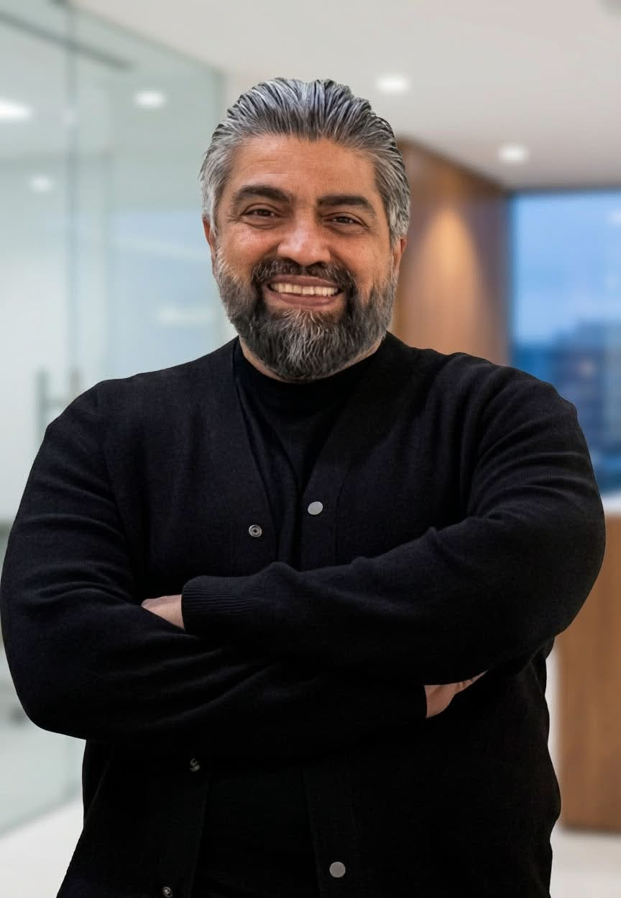
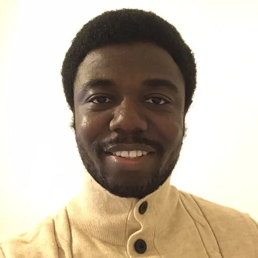
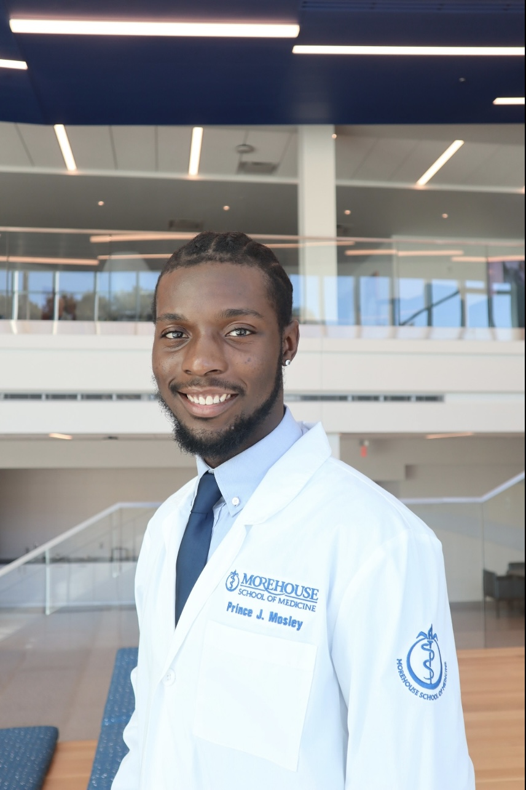
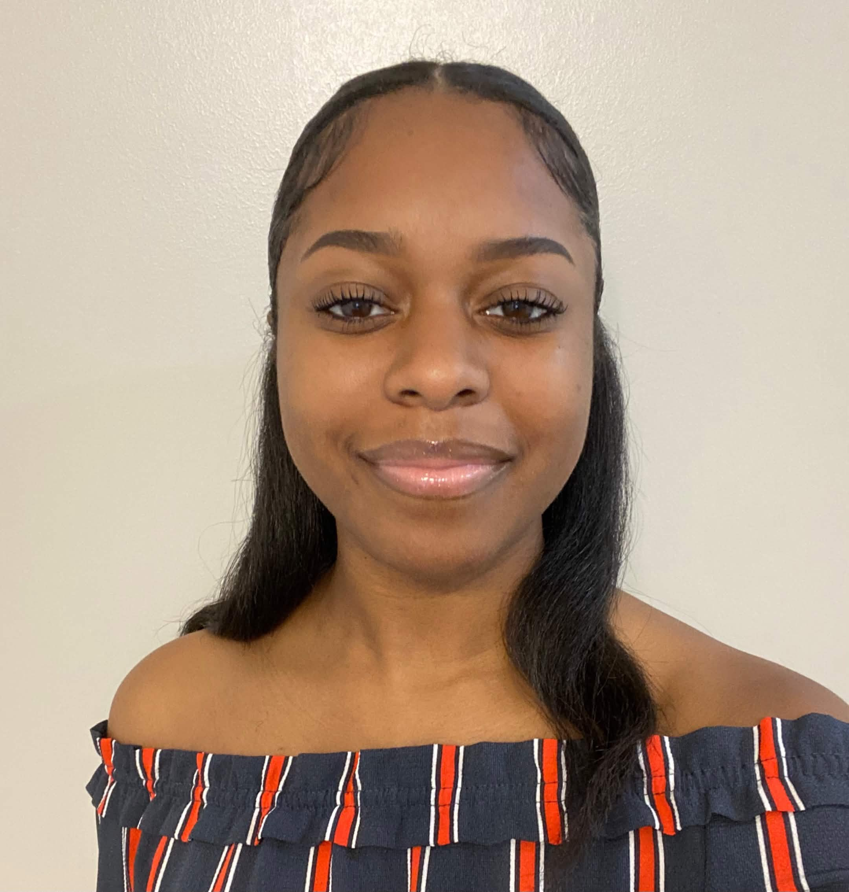
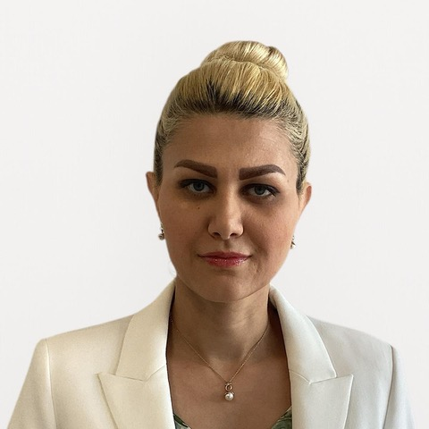
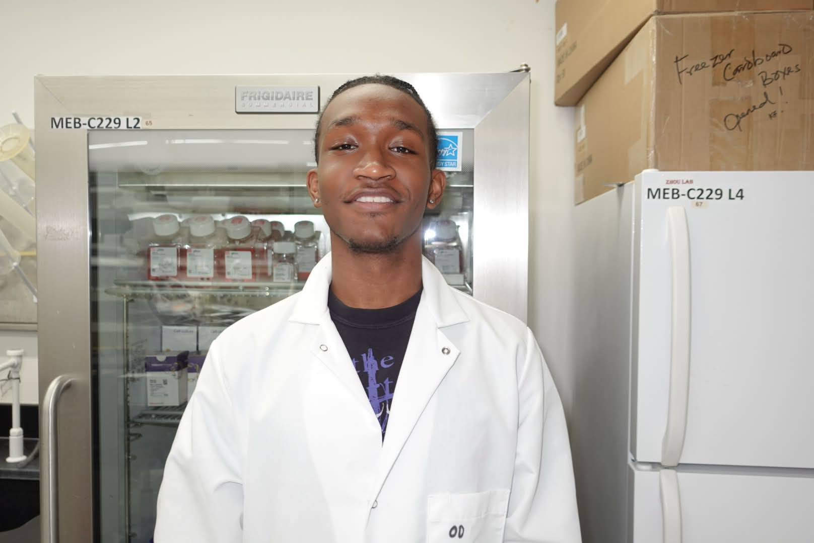

A group of scientists, trainees, and students committed to rigorous
virological research at Morehouse School of Medicine.

Principal Investigator
Dr. Keivan Zandi, Ph.D.
Principal Investigator · Morehouse School of Medicine
Dr. Zandi leads the Virology Lab at Morehouse School of Medicine.
His research focuses on [EDIT: brief research focus — e.g., the
development of novel antiviral therapeutics and the molecular
characterization of emerging viral pathogens].
Lab members
Postdocs, students, and staff

Kehinde (Kenny) D. Fasae, PhD.
Postdoctoral Fellow & Lab Manager
During my doctoral studies at UT Knoxville, I focused on the neurological implications of flavivirus infection, investigating how neurotropic viruses impact the central nervous system. Currently, my research bridges the gap between basic virology and clinical application by exploring siRNA-based therapeutics against both RNA and DNA viruses. I am particularly interested in developing targeted treatments against viral infections and ultimately the chronic diseases they trigger.
As the Lab Manager, I also oversee daily operations and projects, ensuring our team has the resources and organization needed to push the boundaries of RNA therapeutics.
When I’m not in the lab or managing projects, you can find me in church, on the soccer field, singing, or locked in a competitive game of chess.

Prince J. Mosley
Graduate Student
I am a PhD student at Morehouse School of Medicine, a part of the Graduate Education in Biomedical Sciences (GEBS) department. I graduated from Tuskegee University with a B.S. in Health Science and minor in Sociology & Health Disparities Research. My current work in Dr. Keivan Zandi’s lab seeks to prevent the transmission of a deadly congenital virus using novel RNAi therapeutics by targeting the placenta, positively impacting the lives of thousands of families. My future aspirations are to pursue a postdoctoral position where I can further develop my translational research expertise while preparing for leadership roles in regulatory science, health policy, and women’s reproductive health advocacy.

Parivash Kalantary
Research Assistant
Fatemeh Kalantaryardebily, M.D.
She earned her M.D. from Shahid Beheshti University of Medical Sciences and holds a Master’s degree in Microbiology. She currently contributes to research in virology and therapeutic discovery in Dr. Zandi’s lab at Morehouse School of Medicine, with a focus on molecular mechanisms of disease and translational research approaches. (Her background combines clinical experience with laboratory research, allowing her to bridge patient-centered insights with experimental science). Outside of her professional work, she enjoys painting and playing tennis.

Parivash Kalantary
Research Assistant
I hold a Master of Biotechnology degree with an academic background spanning both psychology and biomedical science. My research interests include virology, immunology, molecular biology, and RNA therapeutics, with a broader interest in developing treatments and scientific solutions that improve quality of life for individuals living with chronic, infectious, and difficult-to-treat diseases.
My current research focuses on investigating the effects of particulate matter exposure on cellular responses and viral susceptibility using mammalian cell culture models. In the lab, I work with techniques including siRNA transfection, RNA isolation, cDNA synthesis, and RT-qPCR while contributing to projects involving viral infection models and environmental stressors. I previously completed an internship in analytical development within the biotechnology industry, where I gained experience in scientific data analysis and regulated laboratory workflows.
Outside of the lab, I enjoy photography, hiking, traveling, music, language learning, and spending time with family and my cat, Judy.

Oumar Diallo
Undergraduate Intern
I am an undergraduate premed student in biology at Georgia State University. I have an interest in virology, genomics, pathology, cancer research, nutrition, and human health. I am very passionate about understanding how molecular and genetic processes contribute to disease. I have hopes that my research will aid in my pursuit to attend medical school and become a physician who combines clinical care with biomedical research. Outside of the lab, I am interested in fitness, nutrition, and preventive health, with a strong focus on helping others live longer, healthier lives. I enjoy many things competitive, and I hope my pursuit to become the best physician I can be will better the world.
DH
David Hudgins
Undergraduate Intern
I am a rising senior at Georgia State University. I am majoring in Biology (pre-med conc.) and have a strong passion for microbiology, virology, immunology, and bioinformatics. My experience as a researcher under Dr. Zandi has been very exciting and I am eager to continue our work together exploring various host-pathogen interactions. I greatly appreciate the translational capacity of our research in the study and formulation of anti-viral treatments. My long-term aspirations are to get my M.D from Emory School of Medicine and working as a Neurologist at Grady Memorial Hospital's Marcus Stroke and Neuroscience Center. My personal interests are playing the guitar with friends from the GSU School of Music, chess, skating, and playing soccer!